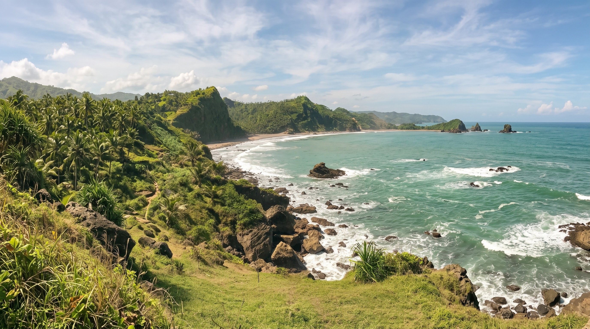
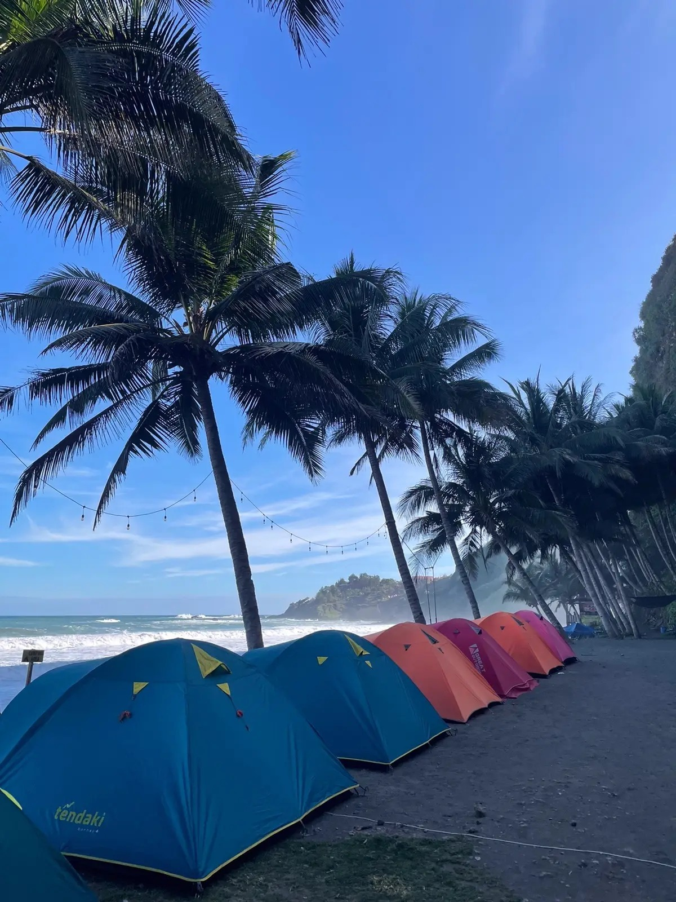
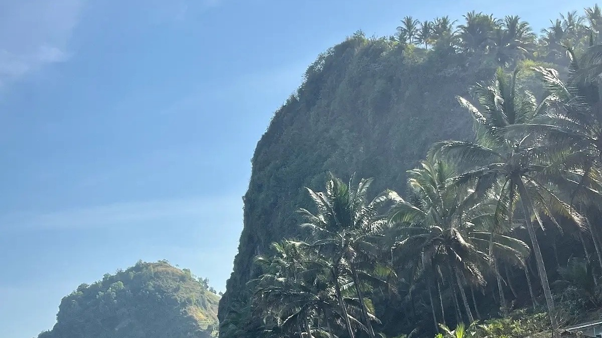

MEDIA SOSIAL
Buka Instagram
Lihat suasana terbaru
Foto dan kabar terbaru dapat membantu Anda membayangkan suasana Pecaron sebelum tiba.

Laut, tebing, dan waktu yang berjalan lebih pelan.
Di Desa Srati, Kecamatan Ayah, Pantai Pecaron mempertemukan bentang tebing dan laut selatan dengan ruang untuk menikmati perjalanan tanpa tergesa. Datang untuk melihat lanskapnya; tinggal sedikit lebih lama untuk merasakan suasananya.
Daya tarik Pecaron terletak pada hubungan antara laut, tebing, ruang terbuka, dan kehidupan warga di sekitarnya. Pengunjung dapat datang untuk menikmati lanskap, fotografi, senja, maupun camping sesuai ketentuan pengelola.
Tebing dan teluk kecil menjadi latar utama untuk melihat laut dari beberapa sudut.
Suara ombak, angin laut, dan ruang terbuka memberi kesempatan untuk menikmati perjalanan tanpa agenda yang terlalu padat.
Mulai dari menikmati bentang alam dan fotografi hingga menunggu senja atau bermalam di area yang ditentukan pengelola.
Perjalanan dapat dilengkapi dengan singgah di warung sekitar dan mengenal usaha yang tumbuh bersama kehidupan warga Desa Srati.
Tidak perlu agenda yang padat. Pilih cara menikmati Pecaron yang paling sesuai dengan waktu dan suasana perjalanan Anda.

Area camping mengikuti lokasi dan ketentuan pengelola. Atur izin serta tempat tenda sebelum bermalam, lalu nikmati perubahan suasana dari sore hingga malam.
Cuaca tropis pesisir dapat berubah. Cek prakiraan cuaca terbaru sebelum berangkat.
Gelombang laut selatan dapat berubah. Selalu patuhi rambu dan arahan keselamatan.
Jelajah pesisir sebaiknya dilakukan pada siang hari dan dari jarak aman saat kondisi air memungkinkan.
Arus laut dapat kuat. Jangan berenang di laut terbuka dan selalu patuhi rambu keselamatan.
Per orang • dapat berubah sesuai ketentuan terbaru
Motor / Mobil
Per tenda • area camping mengikuti arahan pengelola
Waktu kunjungan yang direkomendasikan: 06.00–18.00 WIB
Akses menuju kawasan terhubung dengan Jalur Jalan Lintas Selatan (JJLS). Beberapa bagian perjalanan dapat menanjak atau menurun, sehingga tetap diperlukan kehati-hatian selama berkendara.

Simpan informasi pentingnya, tentukan waktunya, lalu sesuaikan rencana dengan kondisi hari itu.
Informasi di website membantu menyiapkan perjalanan. Untuk perubahan kondisi lapangan, konfirmasi langsung melalui kanal pengelola.
Foto dan kabar terbaru dapat membantu Anda membayangkan suasana Pecaron sebelum tiba.
Gunakan WhatsApp untuk menanyakan biaya, camping, akses, atau perubahan layanan yang perlu dipastikan.
Lihat posisi destinasi di peta dan siapkan perjalanan menuju Desa Srati, Kecamatan Ayah.
Foto dan kanal digital bersifat pelengkap. Untuk kondisi cuaca, laut, akses, dan layanan pada hari kunjungan, jadikan arahan pengelola sebagai acuan di lapangan.